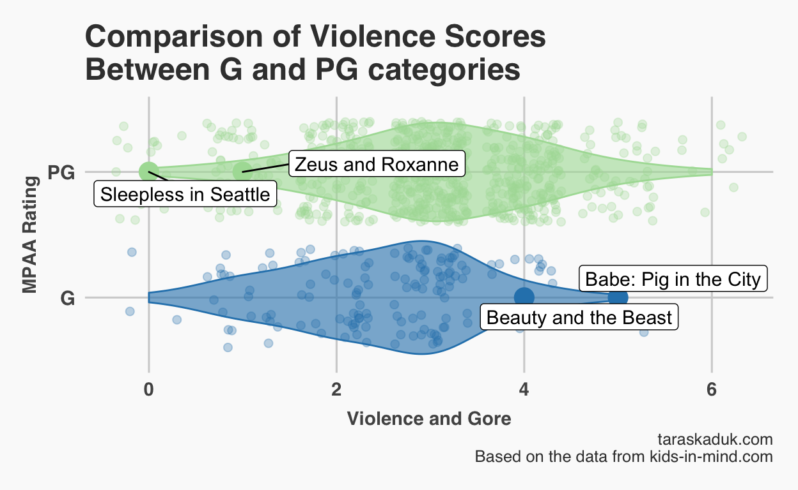
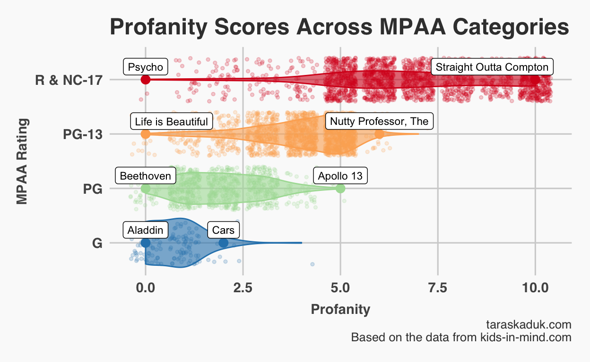

Being a parent in modern days is lots of fun. Not only all of us are pretty much winging it, not having any idea what we’re doing1 — we are also constantly being watched and judged by other parents.
When it comes to watching movies with our six-year-old son, we don’t have a strict set of rules. We pretty much fly by the seat of our pants with “I know it when I see it” approach to violence, profanity, or any other content. Not to say that we’re watching Pulp Fiction and Basic Instinct (the most challenging movie to date was probably Alice in the Wonderland), but all the movies we watch with our son are between G and PG - and we hardly can tell a difference between the two.
That’s why I was surprised to find out that some parents swear by this MPAA rating system, and use it religiously when deciding what their kids can and can’t watch.
And it’d be all good if I haven’t noticed that these ratings are sometimes kind of… arbitrary? So, I decided to dig into the data. Because data will solve all of our problems, right?
Data set
I searched around a bit, and stumbled upon this awesome website called kids-in-mind.com. It had a lot of info similar or equal to one contained on IMBd or Common Sense Media, but it had a crucial key component: every movie on this website is rated on an 11-point scale, from 0 to 10, on three metrics: sex & nudity, violence & gore, and profanity. Well, this is just perfect! Not only that — it also has that MPAA rating data point for every movie, which means I get all of my data in one sitting.
So, I wrote a little R script using rvest package, and got my data into a tidy data frame, and started exploring. After a little bit of data wrangling (I excluded NR movies as they are obviously not rated, and are all over the place. Also, Kids In Mind database didn’t have many NC-17 rated movies, therefore I combined them with R rated films), I got my first results.
Results
On average, higher MPAA rating follows higher levels of inappropriate content, but…
The first result seemed fairly obvious: higher (stricter) MPAA ratings have a higher rate of violence, sex and profanity. On average. However, the amount of overlap is astonishing. Basically, any category is entirely consumed by its two neighboring categories.
What’s more, you can always find a movie in a “lower” category that is more inappropriate than some other movie in a “higher” category: Jimmy Neutron VS Little Rascals, the 5th Harry Potter VS Life is Beautiful, Year One VS The King’s Speech etc.
You can see this from the figure below. You may also notice that there movies scoring 2.5 points on average that are in every MPAA category. We’ll come back to this later.

MPAA is most forgiving on violence
Well, no kidding! This was hardly a surprise. As a foreigner, I am constantly amused by how much violence is considered appropriate, contrasted with, for example, how little nudity is acceptable. Guts and blood? Body parts? Sure, bring it on! Naked breasts? How dare you!
So, next time you rent a G rated movie and think it is clean - think again. It’s probably just as violent as that other PG movie you wanted. Both G and PG movies center around 3 points on violence anyway, with max points being 5 for G and 6 for PG. Just go with PG then, eh?

What the **** is up with profanity?
Now, this is a zero tolerance zone in the movie world. Not sex and nudity, as I assumed. Profanity. Unlike other categories, where scores flow gradually from category to category, profanity has some clear trends:
All G movies are bundled up in a narrow 0-2 points corridor
Most PG-13 movies are between 4 and 5 points on profanity
R and NC-17 movies reside between 5 and 10 points
I bet if I was trying to predict an MPAA rating based on these criteria, profanity would be the strongest predictor (not a concern of this post, but maybe later)

Looking at R & NC-17 section, it is tempting to dive in a bit more. Let’s go!

Indeed, movies in R & NC-17 categories are widely distributed across violence and sex, but snuggle tightly in the upper section of profanity. Why is that? Looking at the data, we can tell that often profanity accompanies other “R” worthy content. However, it is not always the case, and correlation is relatively weak. Good Will Hunting is neither violent nor sexually explicit, but it is profane AF, and, sure enough, is R rated for - wait for it - “strong language, including some sex-related dialogue”. It could be just me (after all, I am a foreigner, and English words don’t carry the same connotation for me), but I think it is mighty unfair to Good Will Hunting to be rated R, especially knowing that Scary Movie, parts 3 through 5, are rated PG-13.
Summary
So, what have we learned?
- It is probably OK to use MPAA ratings as a guide
- If you’re optimizing for lack of violence, G and PG movies aren’t that much different, therefore don’t worry much.
- R rating doesn’t mean the movie is violent or has a lot of sexual content. But it definitely means there is some profanity in it!
Caveats
It is important to remember that any rating will be arbitrary a priori. We aren’t working with exact count of swear words, time duration of violent scenes, or percentage of naked body revealed. And kids-in-mind.com rating isn’t perfect either. For example, the website rates Pulp Fiction at 10 on a “sex & nudity” scale, while there is hardly any sexual content in the movie.
Update, Jan 10, 2018
So, a few days ago we were watching The Late Show with Stephen Colbert, and this bit with Matt Damon caught my instant attention:
I remember when people at MIRAMAX came to us and said “Could you make it [Good Will Hunting] PG-13?” There’s no violence or sex to speak of, it’s just… And I said “What’s making it rated R?”, and they said “the language”, and I said “Okay well so we could loop a couple lines”, and they go “Yeah but you’re only allowed” … I think at the time you were allowed to say the F-word three times… and I said “Okay, well how many are we off by?” And they said “You go over by a hundred and forty-five”
Ha! So, my theory checks out! It’s profanity that makes a movie R rated! It can be puritan and pacifistic, but you drop a couple of F-bombs — and you’re out.
It is funny that I chose exactly Good Will Hunting as an example of how an otherwise modest movie can be sent straight to the R bench for what Matt claims is how they all talk in Boston.
Seriously, you need a license to do braids and nails, yet raising a human being a future member of society is a no-brainer, right?↩︎